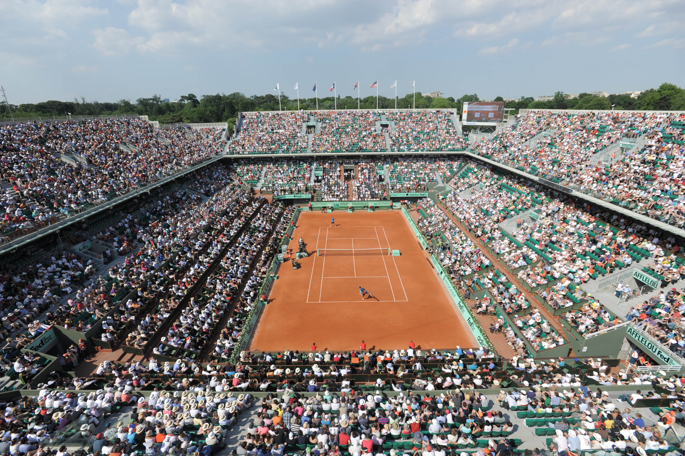

No roof at French Open before 2020
PARIS (AP) — Year after year, as rain affects the schedule and players spend long hours waiting in the locker rooms, a key question keeps coming up at the French Open: Why isn't there a roof over center court?
"Welcome to France," said tournament director Guy Forget as poor weather in Paris on Monday disrupted play for the second consecutive day at the clay-court tournament.
After announcing that a retractable roof would be installed over Roland Garros' Court Philippe Chatrier by 2018, the earliest date has now been pushed back to 2020.
"In other countries, things are quicker," Forget said after play was delayed by more than 2½ hours. "So it's a question of time. I think that 2020 is the ultimate date that we have set for ourselves, we hope that everything will be finished."
With a new retractable roof now available at the U.S. Open, the French Open is the only major tournament without a structure allowing play to go on during rainy days.
"Fortunately we have these tarps that can be pulled over very quickly," Forget said. "So we hope that the first round will finish quickly. The weather is looking good for tomorrow and the next day. But if the weather deteriorates in the coming days, perhaps we will need to have the players play two days running. It would be sad, but the players know that and accept it."
The construction of the roof is part of the planned renovation of Roland Garros, which has been put on hold because of legal action launched by local residents and environmental activists. France's council of state — the country's highest administrative authority — is expected to issue a ruling on the issue in September.
Environmental groups claim the construction of a new 5,000-seat court at the Serres d'Auteuil botanical garden will harm the vegetation, and have been trying to stop it since its inception. The botanical garden's 19th century greenhouses, a few hundred meters from Court Philippe Chatrier, host a large variety of tropical and local flowers.
Setting up the roof will be the final phase of the project.
"The work has already started two years ago in the stadium," Forget said. "It's not necessarily visible right now, but we have made progress. To put the roof on, you really need to change the structure of the stadium."
Delays in the construction and refurbishment work at Roland Garros — the smallest of the four Grand Slam venues with facilities set up on a site of about 21 acres (8 1/2 hectares) — could also harm Paris' bid to host the 2024 Olympics. Bid officials are planning to use the venue both for the Olympics and Paralympics.
"There are strikes in France. Things take a long time," Forget said. "And I think the (International) Olympic Committee is taking that into account. It's not necessarily a positive message we are sending out. But we are positive that our projects will come to fruition."